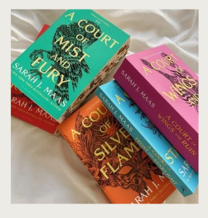
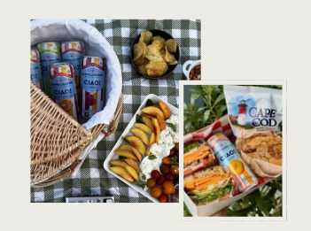
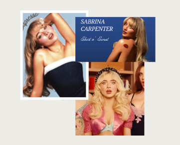
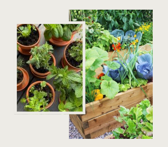
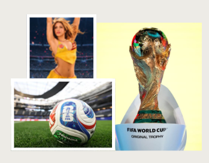

There's something about summer that makes everything feel a little more indulgent — the shows are bigger, the books are steamier, and the snacks require a picnic blanket. Here's what's currently living in my rotation.
My current TV obsession has officially become House of the Dragon. If you enjoyed Game of Thrones, this fantasy continuation, full of morally gray characters and high-stakes political drama, is one of those shows that's impossible not to binge.
I've officially entered my fantasy era. I'm only on book two, but I'm already completely invested in this world. I'm trying to pace myself… but I now understand why everyone recommends this series.
I went into Obsession knowing very little, and I'm so glad I did. If you're a fan of psychological thrillers, unexpected twists, and movies that stay with you long after the credits roll, this one is worth seeing in theaters.
I've reached the point where my fridge is permanently stocked with San Pellegrino Ciao Peach, paired with a deli sandwich and a picnic in the sunshine. It's become my favorite excuse to slow down, enjoy these little moments, and just romanticize life.
Sabrina Carpenter's house tour has been on repeat this week — that mix of feminine, vintage-inspired charm with just enough personality is exactly the kind of home inspiration I didn't know I needed. It's got me rethinking my own space.
Between the tomatoes finally coming in and the basil growing faster than I can use it, my summer veggie and herb garden has become my favorite form of therapy. There's nothing like stepping outside with coffee to see what's ready to pick.
The FIFA World Cup has been giving me something to look forward to almost every day, and my playlists have been filled with Latin music from morning to night. It's the perfect combination for a summer full of sunshine, soccer, and good vibes. With the knockout rounds now underway, every match feels like appointment viewing.
Until next week — stay chévere